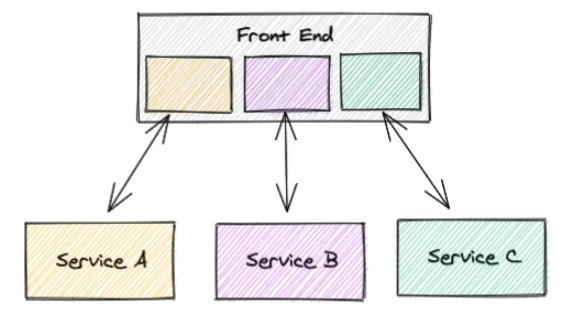

Component Architecture
- Bringt uns Ordnung und Struktur
- Was passiert, wenn das Frontend wächst?
- Mehrere Teams arbeiten an einem Frontend?
- Unterschiedliche Teams
- Mögen unterschiedliche Technologien
- Haben unterschiedliche Arbeitsweisen
- Möchten unabhängig releasen
- Haben unterschiedlichen Codestyle
Micro Frontends
- Aufteilen des Monolith in mehrere Frontends
- Frontends können zu einem Frontend zusammengesteckt werden
Micro Frontends
- Reden meist auch mit eigenen Backends
- Micro Services
